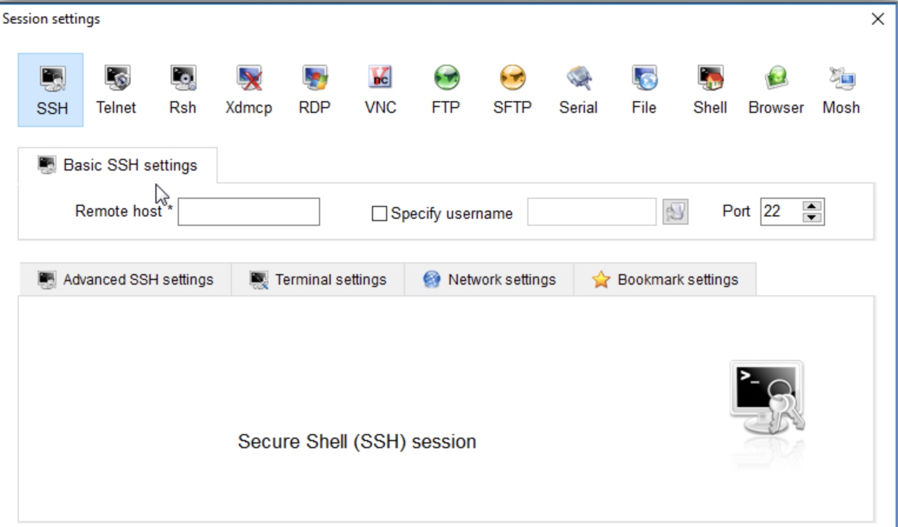

Server login and BASH introduction¶
Server login
FileZilla Configuration
Brief introduction to the Bash command line
The FASTA file format
The FASTQ file format
Server login¶
This Hands-on part will require the use of servers provided by the RECAS Datacenter.
Each of you will use an assigned user name and server IP.
These machines are accessible through the following addresses:
212.189.205.77
90.147.102.58
90.147.102.38
Please use the table available at this link to identify your assigned machine address and user name.
Then you should download the key-file corresponding to your user from this folder.
Once download ends you should not open it. You can move this file into you preferred folder. Warning for UNIX-based users: my advice is to not move that file, in oder to easily find it in download folder when you will use it to login.
For UNIX-BASED operative systems (MacOS, Ubuntu, Fedora)¶
The UNIX-based users must use the Terminal application (find it from those available in your operative system) and type the following lines: Overall the command lines we are going to use are:
chmod 600 /path/to/the/key/userX
ssh -i /path/to/the/key/userX userX@SERVER-ADDRESS
If supposing you have downloaded your key-file in Downloads and the assigned username and server IP are user9 and 212.189.205.77,respectively:
chmod 600 ~/Downloads/user9
ssh -X -i ~/Downloads/user9 user9@212.189.205.77
where userX and SERVER-ADDRESS correspond to the assigned username server IP, respectively.
During the first login, the system will ask you if the server is “trusted” then you should type yes.
Then, it will ask you the password and you should type it. Warning: The pointer will not move during the password typing!!!.
If you have typed correctly you will logged into the server.
WINDOWS¶
Windows users should use MobaXterm.
Launch
MobaXterm;Click on Session;

Click on
SSH:in
Remote hosttype the assigned server address;Check
Specific usernameand fill the adjacent field with the assigned user name;in
advanced SSH settingscheckUse private keyand from the drop-down menu (light blue icon in the adjacent field) select the downloaded key-file.Click OK to start the connection.
FileZilla configuration¶
FileZilla is a tool that allows us to share files between our laptop and server. We need to configure it appropriately:
Click on
Fileand selectSite Manager;Selecting
New Siteit will open a new data sheet in which you can choose and type a name;In the left sided panel we must insert the following parameters:
Protocols:
SFTP SSH File Transfert ProtocolHost:
The assigned machine addressPort:
22Logon Type:
key fileUser:
the assigned user nameKey file: select the downloaded key file.
Click on
Connect.

A brief introduction to the Bash command line¶
Following a short list of useful BASH commands:
pwd: returns the path to the directory in which you are;cd: allows to change our position from a directory to another;ls: returns the list of elements contained in directory;
Options:-l(for more info)-a(shows hidden files)-t(lists files by creation time order)-r(shows the oldest first);
mkdir: allows to create a new folder;df: shows the available space;cp: to create a file copy;rm: to eliminate a file;man: to consult a command handbook;less: shows the content of a textual file;whoami: shows the username of the current user;ssh: allows to login our machine with another remote server
Indice
The FASTA file format¶
The FASTA file format is commonly used in bioinformatics to store biologic sequences, both nucleotide and amino acids.
Following, an example is reported:
>gi|46048717|ref|NM_205264.1| Gallus gallus tumor protein p53
(TP53), mRNA
GAATTCCGAACGGCGGCGGCGGCGGCGGCGAACGGAGGGGTGCCCCCCCAGGGACCCCCCAACATGGCGG
AGGAGATGGAACCATTGCTGGAACCCACTGAGGTCTTCATGGACCTCTGGAGCATGCTCCCCTATAGCAT
GCAACAGCTGCCCCTCCCTGAGGATCACAGCAACTGGCAGGAGCTGAGCCCCCTGGAACCCAGCGACCCC
CCCCCACCACCGCCACCACCACCTCTGCCATTGGCCGCCGCCGCCCCCCCCCCATTAAACCCCCCCACCC
CCCCCCGCGCTGCCCCCTCCCCGGTGGTCCCATCCACGGAGGATTATGGGGGGGACTTCGACTTCCGGGT
GGGGTTCGTGGAGGCGGGCACAGCCAAATCGGTCACCTGCACTTACTCCCCGGTGCTGAATAAGGTCTAT
TGCCGCCTGGCCAAGCCGTGCCCGGTGCAGGTGAGGGTGGGGGTGGCGCCCCCCCCCGGTTCCTCCCTCC
GCGCCGTGGCCGTCTATAAGAAATCAGAGCACGTGGCCGAAGTGGTGCGGCGCTGCCCCCACCACGAGCG
CTGCGGGGGGGGCACCGACGGCCTGGCCCCCGCACAGCACCTCATCCGGGTGGAGGGGAACCCCCAGGCG
CGTTACCACGACGACGAGACCACCAAACGGCACAGCGTCGTCGTCCCCTATGAGCCCCCCGAGGTGGGCT
CTGACTGTACCACGGTGCTGTACAACTTCATGTGCAACAGTTCCTGCATGGGGGGGATGAACCGCCGCCC
CATCCTCACCATCCTTACACTGGAGGGGCCGGGGGGGCAGCTGTTGGGGCGGCGCTGCTTCGAGGTGCGC
GTGTGCGCATGTCCGGGGAGGGACCGCAAGATCGAGGAGGAGAACTTCCGCAAGAGGGGCGGGGCCGGGG
GCGTGGCTAAGCGAGCCATGTCGCCCCCAACCGAAGCCCCCGAGCCCCCCAAGAAGCGCGTGCTGAACCC
CGACAATGAGATATTCTACCTGCAGGTGCGCGGGCGCCGCCGCTATGAGATGCTGAAGGAGATCAATGAG
GCGCTGCAGCTCGCCGAGGGGGGGTCCGCACCGCGGCCTTCCAAAGGCCGCCGTGTGAAGGTGGAGGGAC
CCCAACCCAGCTGCGGGAAGAAACTGCTGCAAAAAGGCTCGGACTGACCACGCCCCCTTTTTCCTTTAGC
CACGCCCCTTTCCCTTCAGGCCCGGCCCATTTCCCTTCAGCCCCGGCCCCATTTCCCTTCAGCCACGCCC
AATTTCCCCTTTACCACGCCCCCTTTCCCTTCAGCCACGCCCCCTTTCCCCTTAGCCACTCCCCTTCCCC
CGCGAAAGCCCCGCCCACCCCCGCCGTAACCACGCCCACGCTTCCCACCCCCCTCCCAATCTGACCACGC
CCCCTTTACGCCTTAACCACGCCCCCTCTCTCCTGGCCCCGCCCCCCTCCGCTTTGGCCATGCGTAAATC
CCCCCCCCCGCCCCCCCCCGGCTCATTTTTAATGCTTTTTTTGATACAATAAAACTTCTTTTTTTACTGA
AAAAAAAAGGAATTC
It is easy to recognize the header row that starts with “>” symbol, followed by an unique identifier and optionally by a small definition.
The following lines contain nucleotide or amino acid sequence.
The biological sequence is reported by using a single-letter code to indicate nucleotide or amino acid (for more Wikipedia).
Indice
The FASTQ file format¶
The FASTQ file format is used to store nucleotide and the related quality-scores obtained by DNA sequencing.
It is a file format used to store sequencing data (for more Wikipedia).
@M03156:25:000000000-AGC3U:1:1101:10602:1714 1:N:0:82
CCTACGGGAGGCAGCAGTAGGGAATCTTCGGCAATGGGGGCAACCCTGACCGAGCAACGCCGCGTGAGTGAAGAAGGTTTTCGGATCGTAAAGCTCTGTTGTAAGTCAAGAACGAGTGT
+
CCCCCGGGGGGGGGGGGGGGGGGGGGGGGGGGGGGGGGGGGGGGGGGGGGGGDGGGGGGEEGGGGGCEFGFGGFGGGGFGGGGDEFCEFFCFDFFFGCFGCFCCCFGGGFDFEC@CFDF
In a FASTQ file each sequence is characterized by 4 lines:
The header row starts with “@”;
the biological sequence;
a separating row starting with “+”. Sometimes it may contain a description;
Quality score in ASCII format.
The header row contains some technical information:
M03156: sequencing machine identifier. We can deduce that a Miseq has been used.
25: progressive counter indicates the number of sequencing executed. In the example it is the 25th sequencing run.
000000000-AGC3U: flow-cell identifier.
1: flowcell line;
1101: flowcell number;
10602:1714: Cartesian coordinates of cluster;
1: PE pair read. It could assume 1 or 2 values;
N: indicates whether the read has been filtered (Y) or not (N);
The Quality Score or Phred Score is a measure of the probability that a base is erroneously called and it is computed with this formula:

The higher the Quality score is the lower is the probability of an erroneous base call:
Q |
P |
ASCII |
|---|---|---|
0 |
1 |
! |
10 |
0.1 |
+ |
20 |
0.01 |
5 |
30 |
0.001 |
? |
40 |
0.0001 |
I |
By knowing the quality score associated to each sequenced base, it is possible to compute the Expected Error (EE):

The EE is the sum of the observed Probability errors P.
The EE estimates the number of bases that are expected as erroneous in the analysed sequence.
Quality evaluation of sequencing data¶
Once the sequencing data have been obtained the first step is to evaluate their quality.
For this purpose we use a widely employed tool called FastQC.
We perform the following operation:
Server login;
Virtual environment activation:
source /opt/miniconda3/bin/activate qiime2-2020.11Create a folder where we will download data for this tutorial and execute the analysis:
mkdir fastqc_test && cd fastqc_testThen download data we would like to analyse:
wget --no-check-certificate 'https://docs.google.com/uc?export=download&id=1n6mrvGO0_dS-hkICDnIFZNkUFCWbtEhl' -O T216P_S82_L001_R1_001.fastq.gzExecute FastQC:
fastqc --noextract T216P_S82_L001_R1_001.fastq.gzDownload the following files on your laptop:
T216P_S82_L001_R1_001_fastqc.htmlT216P_S82_L001_R1_001_fastqc.zip
For more about boxplot Wikipedia.
Exercise 1¶
Execute FastQC on these files:
Download 2 fastq files by using the following commands:
wget --no-check-certificate 'https://docs.google.com/uc?export=download&id=142ipR5m5ELJVpto6EGH8BNbJA9Ur5DAx' -O Sample1_S2_L001_R1_001.fastq.gz
wget --no-check-certificate 'https://docs.google.com/uc?export=download&id=1zGEWBk29KEijLUyZdrq-lLRyN7ikD2Ng' -O Sample1_S2_L001_R2_001.fastq.gz
launch
FastQCon downloaded files and comment the obtained results. hint: the basic command line to execute fastqc isfastqc --noextract FILENAME
Indice